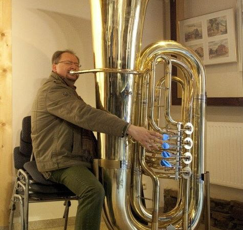
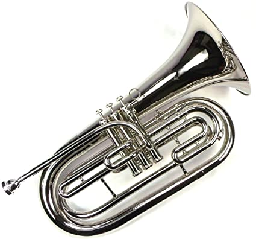
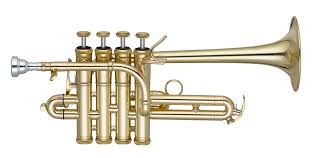

Tuba
This is a tuba it is perfect for playing the base parts of songs and usually they do not get solo parts.

More About The Tuba
As mentioned previouly tubas are really great for playing the bass part, they are not the only instrument for playing it, baritone saxophones are also meant for low pitches, there also exist a contrabass tuba which is lower than both previously mentioned instruments
 MoreMarching Baritone
The marching baritone is similar to a Euphonium and Baritone, the main difference is the shape, it appears to look more like a trumpet because it was designed to be loud and project towards where you point it more so than above you which is good in a concert setting
 MorePicallo Trumpet
It kinda looks like a really ugly trumpet, but it is the highest pitched trumpet that there is and it is a rare sight because not many songs call for them
 More